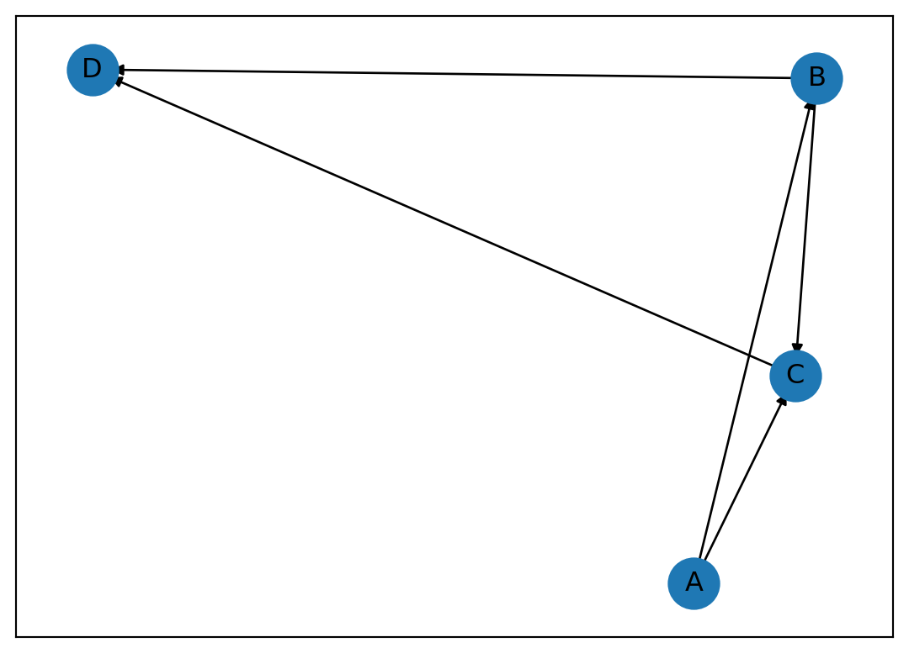

Final Exam
Instructions:
Please give yourselves two hours to complete this exam. Write the exam answers on paper or on your tablet or word processor, then scan and submit them to Canvas as you would a homework.
You may use a calculator, but no notes or computer.
If you have any questions, please let me know. You can send me a message on WhatsApp +617-872-6632; if it’s before 3pm Chicago time, I’ll likely be able to respond quickly. If I don’t respond and you are unable to proceed, please make note of the time and put the exam aside until I am able to respond.
Please submit the exam by 11:59pm Chicago time on Friday, May 24.
There are 75 points total available in the exam.
Good luck!
1
(5 points)
Convert this difference equation into matrix–vector form.
\(2y_{k+3} + 2y_{k+1} - 3y_{k} = 0\)
2
A population is modeled with three stages: larva, pupa and adult, and the resulting structured population model transition matrix is
\[ A = \begin{bmatrix} 0 & 0 & 0.6 \\ 0.5 & 0 & 0 \\ 0 & 0.9 & 0 \end{bmatrix} \]
Population changes are modeled as \(\mathbf{x_{k+1}} = A\mathbf{x_k}\), where \(\mathbf{x_k}=\begin{bmatrix}\text{larva}_k \\ \text{pupa}_k \\ \text{adult}_k \end{bmatrix}\) denotes the number of individuals at each state in time period \(k\).
(3 points) Explain in words what this model says about the three states - for instance, “Every year, X% of the larva become…”
(5 points) Starting with a population of \(\mathbf{x_0}=\begin{bmatrix}0 \\ 30 \\ 100\end{bmatrix}\), calculate the population for \(k=1\) and \(k=2\).
(3 points) The eigenvalues of \(A\) are \(\lambda_1 = 0.646, \lambda_2 = -0.323 - 0.560i, \lambda_3 = -0.323 + 0.560i\). What do these eigenvalues tell you about the long-term behavior of the population?
3
The graph G is given below.
(5 points) Find the adjacency matrix \(A\) and the incidence matrix \(B\) for the graph G.
(4 points) From \(A\) and \(B\), match the following descriptions to the corresponding quantities. (There are only four descriptions, so you will not use all of the quantities.)
Descriptions:
- the number of outgoing edges from each vertex,
- the power of each vertex (the number of paths of length 1 or 2 originating at each vertex)
- the number of paths of length \(k\) between each pair of vertices
- a basis for loops in the graph (don’t worry about the direction of the edges)
Quantities:
- Sum of the entries in the corresponding row of \(A\),
- Entries in the matrix \(A^k\),
- Nullspace of the matrix \(B^T\).
- Entries in the matrix \(B^k\).
- Sum of the entries in the corresponding row of \(A + A^2\),
- Nullspace of the matrix \(A^T\).
4
(5 points) Find a least squares solution to \(A\mathbf{x}=\mathbf{b}\), where \(A=\begin{bmatrix}1 & 1 \\1 & 1 \\1 & 2 \end{bmatrix}\) and \(\mathbf{b} = \begin{bmatrix} 1 \\ 2 \\ 3 \end{bmatrix}\).
(2 points) Is the solution a genuine solution?
(1 point) What is the geometric form of the column space of \(A\) as a subspace of \(\mathbb{R}^3\)? Is it a point, a line, a plane, an ellipsoid, or something else?
(2 points) The least-squares solution can be thought of as a projection of \(b = \begin{bmatrix} 1 \\ 2 \\ 3 \end{bmatrix}\) onto column space of \(A\). In this case, what is the vector which is being set to be orthogonal to the column space of \(A\)?
5
Let \(A=\left[\begin{array}{ccc}1 & 0 & 1 \\ -1 & 1 & 1 \\ 2 & 1 & 4\end{array}\right]\).
(5 points) Find the reduced row-echelon form and rank of \(A\).
(5 points) Find a basis for the column space of \(A\).
(3 points) Determine which of the following vectors is in the column space of \(A\) and, if so, express the vector as a linear combination of the columns of \(A\) :
\(b_{1}=[2,1,0]^{T}\), in \(b_{2}=[2,-3,3]^{T}\).
You may find it helpful to use the following outputs from sympy:
A.gauss_jordan_solve(b1): ValueError: Linear system has no solution
A.gauss_jordan_solve(b2): \(\begin{bmatrix} 2 - \tau_0 \\ -2 \tau_0 -1 \\ \tau_0 \end{bmatrix}\)
6
You have found the singular value decomposition of the real \(m\times n\) matrix \(A\) to be \(A = U\Sigma V^T\), where the nonzero elements of \(\Sigma\) are \(\sigma_1, \sigma_2, \ldots \sigma_r\). Let \(\mathbf{v_1}\) be the first column of \(V\), \(\mathbf{u_1}\) be the first column of \(U\), and so on. In terms of the given quantities, answer the following questions:
(2 points) Find \(A^T A \mathbf{v_1}\)
(2 points) Find \(A \mathbf{v_1}\)
(2 points) Find \(\mathbf{v_1}^T \mathbf{v_2}\)
(2 points) Find \(\mathbf{u_1}^T A \mathbf{v_2}\)
(3 points) Suppose that \(r = n \le m\); that is, the number of nonzero singular values is equal to the number of columns of \(A\), which is less or equal to the number of rows. Describe the solution set to the problem \(A\mathbf{x} = 0\).
(3 points) Find the pseudoinverse \(A^\dagger\) of \(A\), and use it to find the least-squares solution to the system \(A\mathbf{x} = \mathbf{b}\).
7
The Discrete Fourier Transform (DFT) of a sequence \(x[n]\) is given by \(X[k] = \sum_{n=0}^{N-1} x[n] e^{-i2\pi kn/N}\), where \(N\) is the length of the sequence, and where \(k\) runs from \(0\) to \(N-1\).
(5 points) Find the DFT of the sequence \(x[n] = [1,-1,1,-1]\).
(5 points) Assume that \(x[n]\) is a sample from a continuous signal \(x(t)\), where samples were taken at times \(t=[0,1,2,3]\) seconds. Find a function \(x(t)\) that could have produced the samples. (You may do this by trial and error.) Make a sketch of the signal \(x(t)\), with the samples \(x[n]\) marked on the sketch.
(3 points) Argue from this sketch why the DFT of \(x[n]\) has the form it does.